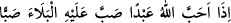

oluşu bana kulluk etmesine niçin mâni olmadı?” denir.
Daha sonra bir zengin getirilip: “Seni bana kulluk etmekten alıkoyan neydi?’ diye
sorulur. Zengin cevaben: “Bana çok mal verdin.” der ve tâbi tutulduğu imtihanı
anlatır.
Bunun üzerine Süleyman (a.s.) getirilerek adama sorulur: “Sen mi daha zengindin
yoksa bu mu?”
Zengin:
“Hayır, o daha zengindi.” diye cevap verince; “Peki bu, zenginliği onu bana kulluk
etmekten neden alıkoymadı?” denir.
Sonra bir hasta getirilip: “Seni bana kulluk etmekten alıkoyan neydi?” diye
sorulur. Hasta: ‘Bana şöyle şöyle belâlar verdin’ der.
Bunun üzerine Eyyûb (a.s.) getirilir ve hastaya: “Sen mi daha çok zarar görüp
belâya uğradın, yoksa bu mu?” diye sorulur. Hasta: “Hayır, o.” deyince: “Peki bu
hastalığı onu bana kulluk etmekten neden alıkoymadı?” denir.
Sonra isyanı sebebiyle Allah’ın rahmetinden ümîd kesen biri getirilip: “Niçin
rahmetimden ümid kestin?” diye sorulur. Adam: “Çok isyan ettiğim için” der. Bunun
üzerine Fir’avn getirilerek: “Sen mi daha isyankârdın, yoksa bu mu?” diye sorulur.
Adam: “Hayır, o.” deyince: “Ama o her şeyi kuşatan rahmetimden ümid kesmemiş,
boğulurken bile lisânıyle kelime-i tevhîdi söylemişti” denir.”
Hulâsa kölelik belâsına dûçâr edilip de Allah’ın emir ve yasaklarında kusuru
bulunanlar aleyhine Yûsuf (a.s.), krallarla zenginler aleyhine Süleyman (a.s.), çeşitli
sıkıntılara mârûz kalanlar aleyhine Eyyûb (a.s.), ümidsizliğe düşenler aleyhine ise
Fir’avn bir hüccettir. Bütün bu durumlardan insanların Rabbine sığınırız.
Fir’avn’ın üzerinde ittifak edilen görüşe göre gerçekten kâfir olduğu halde onun delil
getirilmesi, sırf zâhirî durum itibariyledir. Peygamberlerin ve velilerin başlarına gelen
mihnet, sıkıntı ve belâlar ise onlara verilmiş cezâlar değil hediye ve armağanlardır.
Nitekim bir hadiste şöyle buyrulmuştur:
“Allah bir kulunu
severse belâları üzerine döker de döker.”[38]
Ey Câmî, aşk yolunda gönlünü gam ve derde koy.
Aşk yolunda dert çekmeyen kimse yol adamı değildir
Âyetin işârî yorumu şöyledir: Kalb Yûsuf’u şerîat zindanına girince, onunla birlikte
iki delikanlı daha oraya girdi. Onlar rûh melikinin iki kölesi olan nefis sâkîsi ile beden
fırıncısıdır. Bunlardan biri kralın içecek işlerine, diğeri ise yiyecek işlerine
bakmaktadır.
Nefis, kralın içecek işlerine bakarak ruh kralının yararına olan içecekleri hazırlar.
Çünkü uhrevî bir varlık olan ulvî ruh, süflî bir varlık olan bedende, ancak nefsin içtiği
şeyleri içerek bir takım amellerde bulunabilir.